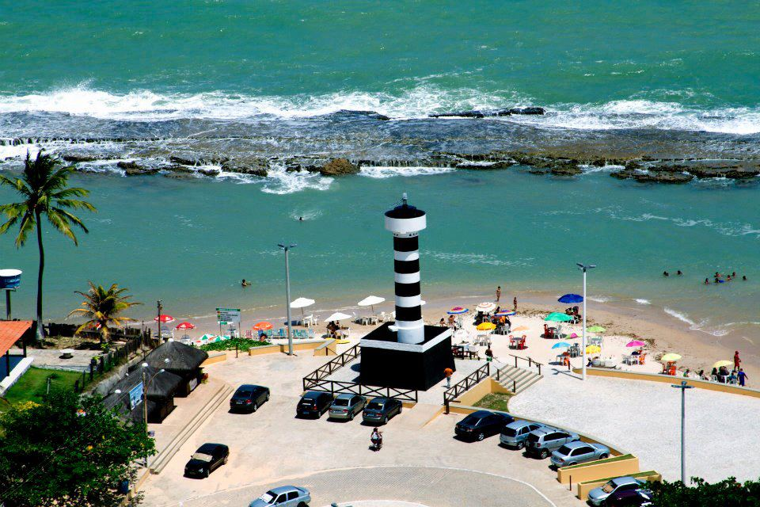

O que você vai ver:
- Sobre a cidade
- Principais pontos turísticos
Sobre a cidade
Coruripe é um município do estado de Alagoas, no Brasil. Sua população estimada em 2019 era de 56 933 habitantes. Sua população vive principalmente do cultivo da cana-de-açúcar, coleta de coco, e da pesca, tendo, ainda, outras formas de subsistência como a cultura de maracujá, mamão, abacaxi, feijão, o artesanato, o comércio e o turismo.
Principais pontos turísticos
- Pontal do coruripe
- Praia Miai de Cima
- Praia Miai de Baixo
- Praia Lagoa do Pau
A 100 quilômetros da capital, a rústica vila preserva a paz e a tranquilidade em meio a enormes coqueirais que contornam o mar cristalino e as areias brancas, finas e desertas. O farol e os recifes completam a paisagem que vem sendo cada vez mais cobiçada.
Praia Pontal do Coruripe
Considerada uma das praias mais movimentadas da cidade, seu clima agradável e beleza natural encantam os diversos visitantes que chegam ao lugar. É uma das melhores opções para os que gostam de lugares mais agitados, seja com a família ou amigos.

Praia Miai de Cima
Com aproximadamente 8 quilômetros de extensão, essa praia é considerada uma boa opção para os que preferem lugares menos movimentados. Seu clima tranquilo é propício ao descanso, onde o visitante pode desfrutar de bons momentos, seja com a família ou amigos.

Praia Miai de Baixo
A Praia da Lagoa do Pau fica situada no litoral sul de Maceió, e como qualquer uma das seis praias do município de Coruripe, oferece uma paisagem simplesmente divinal. Esta praia fica próxima à Praia do Pontal de Coruripe, e é uma excelente opção para quem gosta de tranquilidade, usufruindo de uma paisagem paradisíaca.

Praia Lagoa do Pau